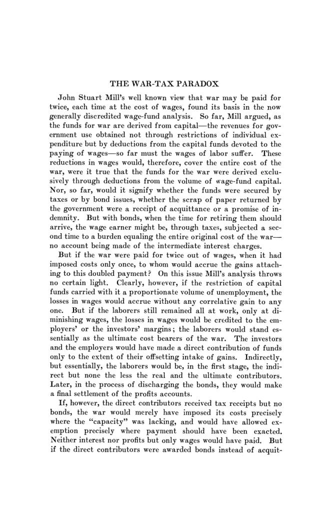

Davenport, 1919: por que o trabalhador paga a guerra duas vezes
Leitura: 8 min
H. J. Davenport retoma a tese de Mill de que os trabalhadores podem pagar duas vezes por uma guerra e mostra como a inflação e a venda de títulos aos que lucraram com ela a tornaram realidade nos Estados Unidos.


Dois vizinhos, lavradores, têm as terras junto a um pântano de onde sai, de tempos em tempos, um animal que devasta as plantações. Combinam que o mais jovem e mais forte, que é também o menos abastado, passará a temporada caçando o animal. Sua lavoura fica por fazer, sua saúde e sua vida correm risco. O outro o sustenta durante a caçada, com a condição de que, se voltar, ele lhe devolva o adiantamento; se não voltar, pagarão seus filhos. A parábola é de H. J. Davenport, da Cornell University, e o vizinho que adianta o sustento é ele mesmo, comprador de títulos de guerra, diante de um colega convocado.
O artigo, publicado no número de março de 1919 da American Economic Review, pouco depois do armistício, retoma um paradoxo de John Stuart Mill: o de que a guerra pode ser paga duas vezes, cada vez à custa dos salários. Davenport quer mostrar que a conclusão de Mill, embora apoiada numa análise errada, descreveu o que de fato aconteceu.
O que dizia Mill?
O argumento de Mill se apoiava na doutrina do fundo de salários, segundo a qual os salários são pagos de um estoque de capital. Na medida em que os recursos da guerra saíssem desse capital, e não da redução do consumo de quem os fornecia, os salários cairiam no mesmo montante. Os trabalhadores pagariam a guerra uma primeira vez. Se ela fosse financiada com títulos, pagariam uma segunda, quando os impostos para resgatá-los recaíssem sobre eles.
Davenport observa que Mill não tirou a conclusão que a análise pedia, a condenação dos empréstimos de guerra e a preferência pelos impostos. A doutrina do fundo de salários estava desacreditada, mas a intuição de Mill, escreve, era guia mais seguro que seu aparato técnico: a tese de que os trabalhadores podem quase pagar duas vezes por uma guerra que custou uma descreveria não só uma possibilidade teórica, mas o desfecho provável e real.
Davenport descarta antes outra via de prejuízo. Desemprego em massa por falta de capital lhe parece pouco crível em tempo de guerra. A guerra pode reduzir a produção ao prejudicar a manutenção dos bens de capital, mas essa perda recai sobre todos; e, como milhões de homens passam à produção militar ou ao serviço, o fator que fica escasso é o trabalho, não o equipamento. O deslocamento do custo para os trabalhadores teria de vir das operações fiscais.
Por que a guerra não pode ser paga pelo futuro?
O ponto de partida de Davenport é que a guerra só impõe custos no presente. A maior parte da riqueza existente, casas, terras, equipamentos, linhas de bonde, não é consumível. Os estoques de bens de consumo são pequenos e destinados a uso rápido; é possível esticá-los, usando roupas e sapatos velhos, adiando a compra de um sobretudo ou a troca de móveis, e foi o que se fez nos meses de guerra. Mas a produção futura não contribui em nada.
“O consumo de guerra não tem tempo futuro.” (“War consumption has no future tense.”)
Os títulos, portanto, não adiam o pagamento: adiam os impostos. Quem compra um título restringe agora seu consumo ou seus investimentos alternativos; uma geração depois, outra pessoa terá de restringir o seu, para que o portador receba de volta, com juros, o que a tributação presente o teria obrigado a pagar. A guerra redistribui hoje a capacidade produtiva; o resgate dos títulos redistribuirá amanhã apenas os bens produzidos. Um país pode tomar emprestado no exterior, mas os Estados Unidos, sem uma segunda América a quem pedir e ainda credores dos aliados, tiveram de encontrar em casa os bens e serviços da guerra.
Se os impostos futuros recaíssem sobre as mesmas classes que os presentes deveriam atingir, a escolha entre títulos e impostos seria só uma questão de equidade entre os mais ricos. Mas Davenport considera essa hipótese incrível em relação aos impostos futuros e impossível em relação aos sacrifícios presentes.
Por que os ricos não bastavam?
A resposta é aritmética. Davenport supõe os preços de antes da guerra, uma renda nacional de US$ 40 bilhões e um orçamento de guerra de US$ 15 bilhões, cerca de dois quintos da renda. As declarações de imposto de renda de 1914 registravam menos de 400 mil rendas acima de US$ 3.000. Um imposto de 100% sobre todas elas, sem nenhuma isenção e supondo a média de US$ 3.000, renderia menos de US$ 1,25 bilhão. Mesmo dobrando a renda média para cobrir subdeclaração e dobrando o número de contribuintes para cobrir evasão, o total chegaria a US$ 10 bilhões.
Uma guerra que absorve dois quintos dos recursos do país, conclui, só é possível com grandes sacrifícios das rendas modestas. Depois que ricos e remediados pagam tudo o que podem, ainda falta uma contribuição enorme das massas. Quando a renda média disponível para o consumo civil cai dois quintos, a das massas tem de cair; o salário real precisa diminuir. Davenport acrescenta que não houve aumento apreciável da produção diária por trabalhador, e que a redistribuição de pessoas para ocupações novas desperdiçou muita qualificação.
Como a inflação cobra o imposto do trabalhador?
O conflito ganha outro peso com a convocação militar. Para quem é convocado, diz Davenport, ela equivale a um imposto de 100% sobre seus ativos: o emprego, as relações, o salário e possivelmente a vida. É nesse ponto que entra a parábola dos vizinhos. E a parábola piora com a inflação: agora o vizinho que fica sustenta o caçador cortando madeira do terreno do próprio caçador, de modo que, volte ou não o outro, não ficará mais pobre por tê-lo sustentado e ainda terá títulos contra ele.
O mecanismo é o atraso dos salários. Em períodos de inflação, as margens dos empregadores se alargam porque os custos, salários entre eles, sobem mais devagar que os preços. Os salários nominais acabam subindo pela concorrência entre empregadores, mas, enquanto o ajuste não se completa, o salário real cai. Davenport atribui essas margens menos à guerra que à inflação: com ou sem guerra, ela daria o mesmo nível geral de lucros.
A queda do salário real, insiste, era inevitável. O consumo civil tinha de diminuir, e quase 4 milhões de homens tinham sido convocados, enquanto outros milhões passavam às indústrias de navios, suprimentos e munições. Se os assalariados não poupassem para emprestar nem fossem tributados, teriam de ter o consumo restringido pelos preços. Foi o que ocorreu. O trabalhador, escreve, submeteu-se por patriotismo; aquele era o seu imposto.
Onde estava o erro?
O ponto decisivo, para Davenport, está no destino dos lucros. Os empregadores funcionaram como coletores do governo de uma contribuição do trabalho que era inevitável. Mas, em vez de entregar o que coletavam em impostos, compraram títulos, o que era tido como o gesto mais patriótico ao seu alcance, e receberam promessas com juros em vez de quitações. Os títulos comprados com margens pagas pelo trabalho tornaram-se obrigação contra o trabalhador como contribuinte.
“Paz, então, ao espírito profético de Mill.” (“Peace, then, to Mill’s prophetic spirit”)
Davenport é explícito sobre o que não considera injusto: os salários reais baixos, as massas sofrendo, os preços altos, os lucros que os preços permitiam, desde que o governo os absorvesse em impostos. O dano estava em que alguém tivesse recebido títulos, sobre os quais alguém no futuro terá de ser tributado para pagar juros e principal. Só uma adaptação radical do sistema tributário futuro poderia remediar isso, e ele a considera quase impraticável. Não foi, conclui, um erro deliberado, mas um trágico desacerto.
Na minha leitura
Na minha leitura, o artigo separa com clareza duas coisas que o debate sobre impostos e empréstimos costumava misturar. O custo real da guerra é o consumo civil que deixa de existir no presente, e nenhuma forma de financiamento o transfere para o futuro. O que os títulos transferem é a distribuição desse custo entre pessoas, e é aí que Davenport põe a questão de justiça.
O segundo passo é tratar a inflação como imposto com incidência própria. Pelo atraso dos salários em relação aos preços, ela cobra do assalariado uma parte do custo real e a entrega, como margem, ao empregador. Se essa margem é depois emprestada ao governo, o mesmo recurso aparece duas vezes: como sacrifício do trabalhador durante a guerra e como crédito contra ele depois dela. O paradoxo de Mill reaparece sem o fundo de salários, apoiado só na defasagem entre preços e salários.
Glossário
- Fundo de salários
- doutrina clássica segundo a qual os salários são pagos de um estoque prévio de capital.
- Salário real
- salário medido pelo que compra, e não em unidades de moeda.
- Títulos de guerra
- títulos da dívida pública vendidos para financiar despesas militares.
- Quitação fiscal
- comprovante de imposto pago, que não dá direito a reembolso, ao contrário do título.
- Convocação
- serviço militar obrigatório.
- Margem do empregador
- diferença entre preços de venda e custos, que se alarga quando os custos sobem mais devagar.
Fontes
- The War-Tax Paradox — H. J. Davenport (Cornell University) (pp. 35–46). JSTOR · Internet Archive (PDF)
- Edição completa, com os demais artigos: Nº 155 do Arquivo.
Documento em domínio público (EUA, publicado antes de 1931), via JSTOR Early Journal Content e Internet Archive. Resumo e comentário do autor deste site, sem afiliação com a American Economic Association. Encontrou um erro? Escreva: a correção é publicada no próprio texto, com data.
↑ Nº 155 · O paradoxo do imposto de guerra e o preço do papel fixado em juízo Haney, 1919: quando um tribunal fixou o preço do papel →